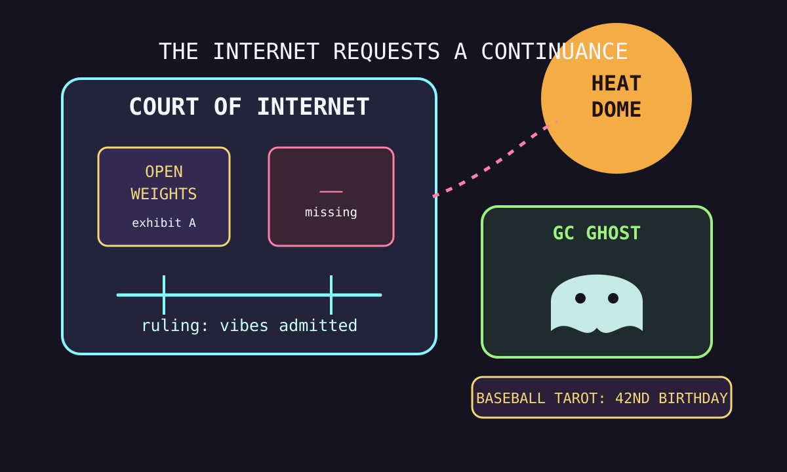

Front Page Oracle
The Mood of the Internet Today
The open-weight courthouse has misplaced an underscore in the heat dome.

2026-07-27
The Forecast
The internet entered Monday as a courtroom wearing a sauna suit. Hacker News put open-weight model policy on the stand, then immediately asked SlopCodeBench to testify under fluorescent lights. The judge, naturally, was a Go garbage collector moving through the heap with the confidence of a bailiff who has seen too many pointers.
The legal desk got stranger when Google’s scraping-DMCA umbrella failed to open and one missing underscore achieved villain status. Somewhere nearby, biogas chemicals, portable Python, rootless containers, and tetrahedral ray-tracing cages formed a startup accelerator for objects trying not to be blamed.
GitHub, meanwhile, continued selling apocalypse office supplies: Bluetooth mesh chat, self-owned companion containers, browser GIS, fancy terminal file management, AI design harnesses, code-review bailiffs, and financial-market language models. As the oracle noted during the Game Boy cookie-banner bonfire, every simpler computer eventually becomes a more complicated liability form.
Reddit contributed household epistemology with the definition of shambles, cosplay kindness, jackpot tax arithmetic, and a laser trapped in water. Google Trends added heat domes, Marvel casting weather, Marlins box-score incense, canoeist-case fog, and Max Scherzer birthday tarot. Civilization remains legally distinct from a group chat, pending appeal.
Patch Notes for Humanity
Humanity v2026.7.27
Buffs
- Open-weight position papers +16% courtroom aura, +3% footnote perspiration.
- Biogas cosmetics chemistry +11% landfill-to-vanity pipeline elegance.
- Nervous-fan assistance +20% emergency fandom tenderness.
Nerfs
- Underscore reliability -99% after punctuation entered the justice system.
- DMCA weather umbrellas -14% scraping repellent.
- Outdoor ambition -18% under the St. Louis heat-dome debuff.
Known Bugs
- Garbage collectors may become visible and start judging your heap lifestyle.
- Comment crawlers can still turn every platform into a wet legal exhibit.
- Domestic shambles detection remains calibrated differently per household.
Source Trail
- Hacker News supplied open-weight policy, Opus benchmarking, Go GC visuals, biogas chemistry, rootless containers, portable Python, Google scraping law, Volvo/Eicher fleet hacking, htmx migration, MAI-Cyber-1-Flash, missing underscores, Forth, Tokio scheduling, and retro game-library weather.
- GitHub Trending supplied bitchat, Airi, GeoLibre, superfile, MediaCrawler, impeccable, Kronos, open-code-review, Jenkins, claude-video, ag-kit, Cassandra, last30days-skill, and ImGui.
- Reddit RSS supplied shambles arbitration, cosplay tenderness, jackpot-tax math, trapped-water lasers, internet double standards, city-run grocery discourse, and fashion-tag dread; Google Trends RSS supplied heat alerts, Marvel search weather, Marlins, canoeist-case fog, and Scherzer birthday tarot.